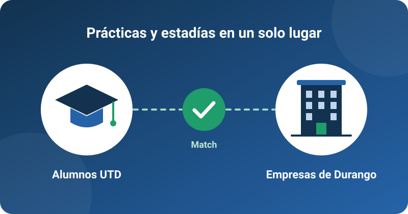

Encuentra tu estadía sin buscar a ciegas
VinculaUTD es una plataforma web que reúne en un solo lugar las vacantes de prácticas y estadías de las empresas de Durango. Creas tu perfil con tu carrera, tus habilidades y tu CV, el sistema te recomienda las vacantes que más te quedan y, antes de postularte, puedes leer lo que opinan los exalumnos que ya estuvieron en esa empresa.
¿Te toca hacer prácticas o estadía? Crea tu perfil en VinculaUTD y encuentra una empresa que vaya con tu carrera. Si eres empresa, publica tus vacantes y recibe postulaciones de alumnos de la UTD.

¿Por qué usar VinculaUTD?
Hoy, encontrar empresa para las prácticas depende mucho de la suerte. Los alumnos buscan con conocidos o en grupos de Facebook sin saber qué empresas aceptan practicantes ni qué perfil piden. Eso hace perder semanas y a veces termina en una estadía que no tiene nada que ver con la carrera. VinculaUTD junta en un solo lugar las vacantes, las recomendaciones automáticas y las opiniones reales de exalumnos.
Beneficios
-
Todas las vacantes en un solo lugar
Las empresas de Durango publican sus vacantes de prácticas y estadías en la plataforma. Ya no tienes que buscar en grupos de Facebook ni preguntar con conocidos.
-
Recomendaciones según tu perfil
El sistema compara tu carrera y tus habilidades con lo que pide cada vacante y te sugiere las que más te quedan.
-
Opiniones de exalumnos
Antes de postularte puedes leer cómo les fue a otros alumnos en esa empresa, para que sepas a qué vas.
-
Acompañamiento de Vinculación
El área de Vinculación de la UTD ve quién ya tiene empresa y quién sigue buscando, así puede apoyarte a tiempo.
¿Para quién es?
- Alumnos de la UTD que van a hacer prácticas o estadía.
- Empresas de Durango que buscan practicantes con un perfil específico.
- El área de Vinculación de la UTD, que lleva el control de las prácticas.
- Exalumnos que quieren compartir cómo les fue en la empresa donde estuvieron.